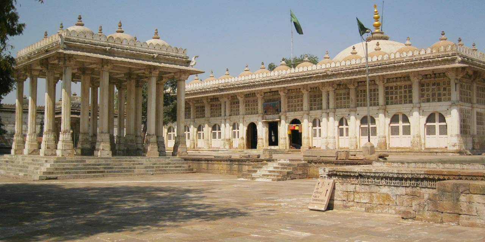
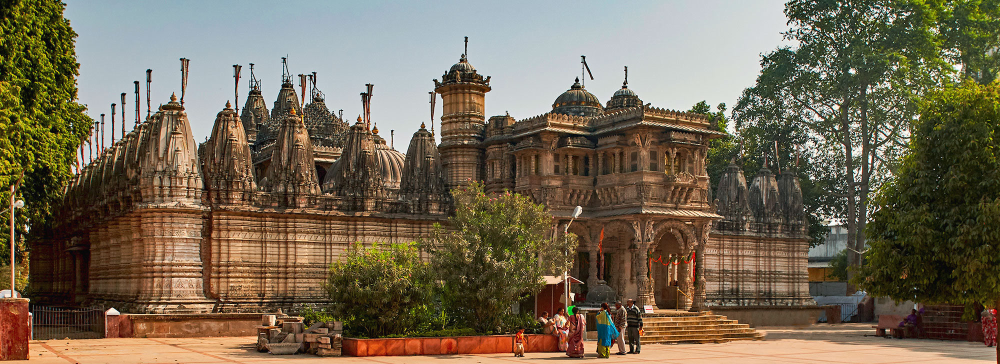
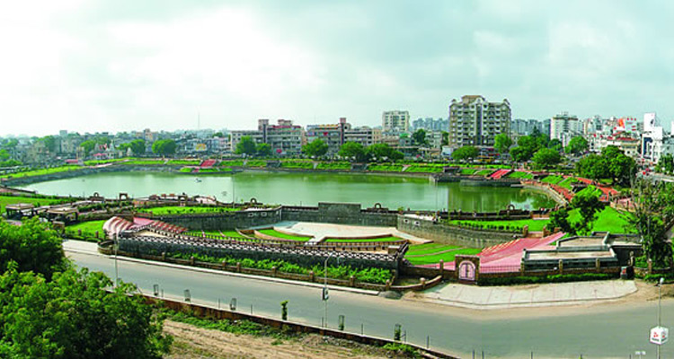
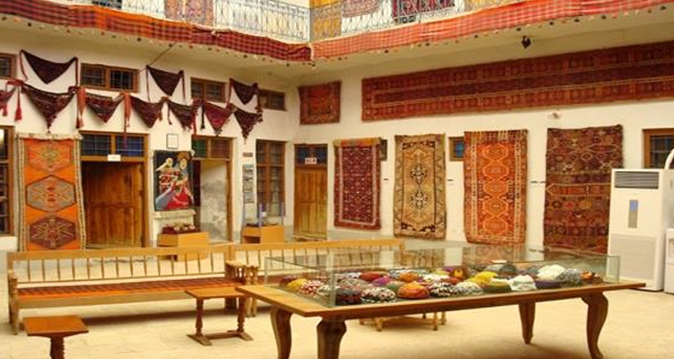
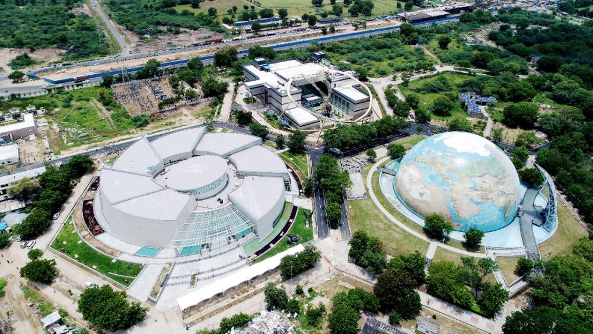

Sabarmati Ashram: The Heart of the Freedom Struggle
Sabarmati Ashram, also known as Gandhi Ashram, is a historic site that served as the residence of Mahatma Gandhi.
Fun Fact:
~It was from here that Gandhi launched the Salt March in 1930!
Things to Explore at Sabarmati Ashram:
-
The Main Building:
Visit the main building where Gandhi lived and worked, now a museum showcasing his life and teachings.
-
The Library:
Explore the library containing a vast collection of books on Gandhian philosophy and history.
-
The Peace Garden:
Stroll through the serene gardens that reflect Gandhi’s love for nature and simplicity.
-
The Exhibition Halls:
Discover various exhibitions that depict the freedom struggle and Gandhi’s role in it.
-
The Dandi March Path:
Walk along the path taken by Gandhi during the historic Dandi March.
Why Visit Sabarmati Ashram?
!Because it’s a place of inspiration, peace, and a reminder of India’s struggle for independence!

Kankaria Lake: A Serene Escape in the City
Kankaria Lake is a beautiful artificial lake surrounded by a picturesque park, offering a perfect escape from the city’s hustle and bustle.
Fun Fact:
~It was built in the 15th century and is one of the largest lakes in Ahmedabad!
Things to Explore at Kankaria Lake:
-
The Lakefront:
Take a leisurely stroll along the lakefront, enjoying the serene views and fresh air.
-
The Zoo:
Visit the Kankaria Zoo, home to a variety of animals and birds.
-
The Balloon Ride:
Experience a hot air balloon ride for a bird’s eye view of the lake and its surroundings.
-
The Amusement Park:
Enjoy various rides and attractions at the amusement park located near the lake.
-
The Food Stalls:
Savor local delicacies at the food stalls lining the lake.
Why Visit Kankaria Lake?
!Because it’s a perfect spot for relaxation, recreation, and enjoying nature in the heart of the city!

Jama Masjid: A Testament to Mughal Architecture
Jama Masjid is one of the largest mosques in India, known for its stunning architecture and historical significance.
Fun Fact:
~It was built in the 15th century by Sultan Ahmed Shah, the founder of Ahmedabad!
Things to Explore at Jama Masjid:
-
The Main Prayer Hall:
Admire the intricately carved pillars and domes in the main prayer hall.
-
The Courtyard:
Explore the vast courtyard that can accommodate thousands of worshippers.
-
The Minarets:
Climb the minarets for a panoramic view of the city.
-
The Surrounding Market:
Visit the bustling market surrounding the mosque, offering a variety of goods and local delicacies.
-
The Historical Significance:
Learn about the mosque’s history and its role in the city’s cultural heritage.
Why Visit Jama Masjid?
!Because it’s a masterpiece of Mughal architecture and a symbol of Ahmedabad’s rich history!

Sarkhej Roza: A Blend of Islamic and Hindu Architecture
Sarkhej Roza is a complex of tombs and mosques, known for its unique blend of Islamic and Hindu architectural styles.
Fun Fact:
~It was built in the 15th century and is often referred to as the ‘Acropolis of Ahmedabad’!
Things to Explore at Sarkhej Roza:
-
The Main Tomb:
Visit the tomb of Sultan Ahmed Shah, adorned with intricate carvings and beautiful arches.
-
The Mosque:
Explore the mosque with its stunning minarets and serene ambiance.
-
The Stepwell:
Discover the ancient stepwell that reflects the architectural brilliance of the era.
-
The Gardens:
Stroll through the lush gardens that surround the complex, offering a peaceful retreat.
-
The Historical Significance:
Learn about the historical importance of Sarkhej Roza in the context of Ahmedabad’s heritage.
Why Visit Sarkhej Roza?
!Because it’s a serene place that showcases the rich cultural fusion of Ahmedabad!

Hutheesing Jain Temple: A Jewel of Jain Architecture
Hutheesing Jain Temple is a stunning example of Jain architecture, known for its intricate carvings and serene ambiance.
Fun Fact:
~It was built in the 19th century and is dedicated to Dharmanatha, the fifteenth Tirthankara!
Things to Explore at Hutheesing Jain Temple:
-
The Main Shrine:
Admire the beautifully carved marble pillars and the main shrine dedicated to Dharmanatha.
-
The Courtyard:
Explore the peaceful courtyard surrounded by intricately carved walls.
-
The Sculptures:
Marvel at the exquisite sculptures depicting various Jain Tirthankaras and celestial beings.
-
The Historical Significance:
Learn about the temple’s history and its significance in the Jain community.
-
The Spiritual Ambiance:
Experience the serene atmosphere that makes it a perfect place for meditation and reflection.
Why Visit Hutheesing Jain Temple?
!Because it’s a masterpiece of Jain architecture and a place of spiritual tranquility!

Vastrapur Lake: A Tranquil Oasis in the City
Vastrapur Lake is a serene lake surrounded by a beautiful park, offering a perfect spot for relaxation and leisure.
Fun Fact:
~It was developed in the 1980s and has become a popular recreational spot for locals!
Things to Explore at Vastrapur Lake:
-
The Walking Path:
Take a leisurely walk along the well-maintained walking path around the lake.
-
The Boating Facility:
Enjoy boating on the calm waters of the lake, surrounded by lush greenery.
-
The Children’s Park:
Let your kids have fun at the children’s park located near the lake.
-
The Food Stalls:
Savor local snacks and refreshments at the food stalls around the lake.
-
The Scenic Views:
Relax and enjoy the scenic views of the lake, especially during sunset!
Why Visit Vastrapur Lake?
!Because it’s a peaceful retreat in the heart of the city, perfect for unwinding and enjoying nature!

Calico Museum of Textiles: A Textile Wonderland
Calico Museum of Textiles is a renowned museum that showcases the rich textile heritage of India.
Fun Fact:
~It houses one of the finest collections of textiles in the world, dating back to the 15th century!
Things to Explore at Calico Museum:
-
The Textile Gallery:
Explore the extensive collection of textiles, including rare fabrics, garments, and tapestries.
-
The Weaving Demonstrations:
Watch live demonstrations of traditional weaving techniques by skilled artisans.
-
The Historical Significance:
Learn about the history and evolution of Indian textiles through informative exhibits.
-
The Architectural Beauty:
Admire the beautiful architecture of the museum building, which reflects traditional Indian styles.
-
The Cultural Heritage:
Discover the cultural significance of textiles in Indian society and their role in various traditions!
Why Visit Calico Museum?
!Because it’s a treasure trove for textile enthusiasts and a glimpse into India’s rich cultural heritage!

Science City: A Fun Learning Experience
Science City is an educational and entertainment complex that offers a fun learning experience for all ages.
Fun Fact:
~It is one of the largest science centers in India, promoting science and technology education!
Things to Explore at Science City:
-
The Space Capsule:
Experience a simulated space journey in the state-of-the-art space capsule.
-
The Dinosaur Park:
Explore life-sized dinosaur models and learn about prehistoric creatures.
-
The Science Museum:
Discover various scientific principles through interactive exhibits and displays.
-
The IMAX Theater:
Watch educational films in the immersive IMAX theater.
-
The Outdoor Activities:
Enjoy various outdoor activities, including a ropeway and a boating facility!
Why Visit Science City?
!Because it’s a perfect blend of education and entertainment, making science fun for everyone!

Manek Chowk: A Food Lover’s Paradise
Manek Chowk is a bustling market and food hub, known for its vibrant atmosphere and delicious street food.
Fun Fact:
~It transforms into a lively night market, offering a variety of local delicacies!
Things to Explore at Manek Chowk:
-
The Street Food Stalls:
Indulge in a variety of mouth-watering street foods, including Dhokla, Kachori, and more.
-
The Shopping Experience:
Shop for local handicrafts, jewelry, and souvenirs at the bustling market stalls.
-
The Night Market:
Experience the vibrant night market atmosphere with colorful lights and lively crowds.
-
The Cultural Significance:
Learn about the historical importance of Manek Chowk in Ahmedabad’s cultural landscape.
-
The Local Vibe:
Immerse yourself in the local culture and enjoy the lively ambiance of this iconic market!
Why Visit Manek Chowk?
!Because it’s a food lover’s paradise, offering a delightful culinary journey through Ahmedabad’s street food scene!